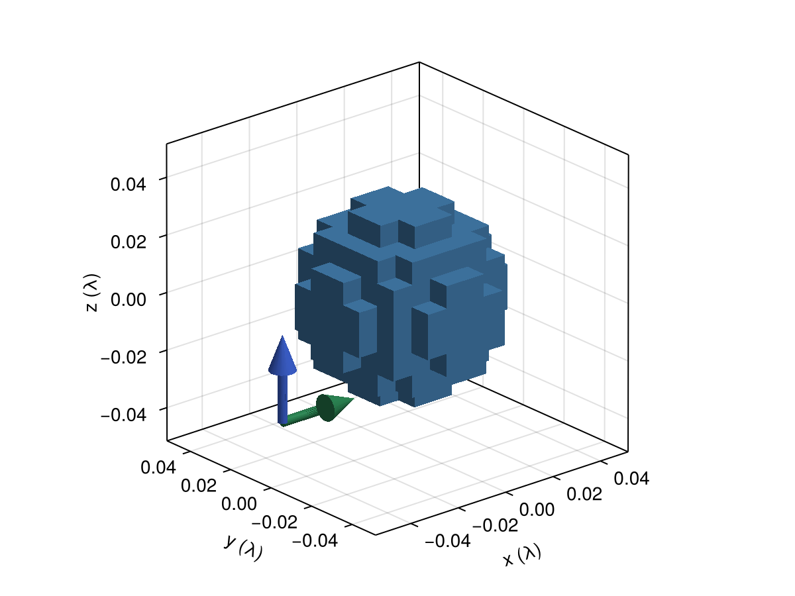
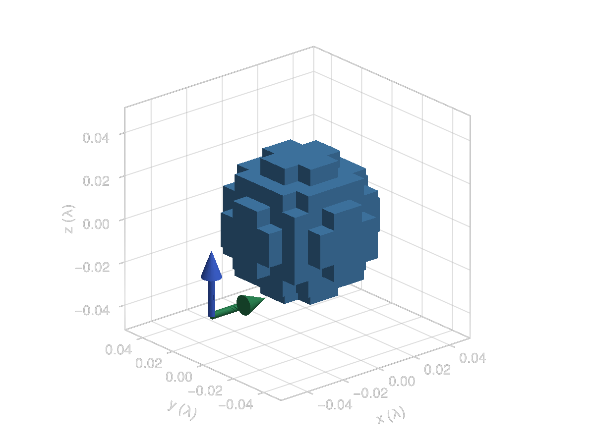
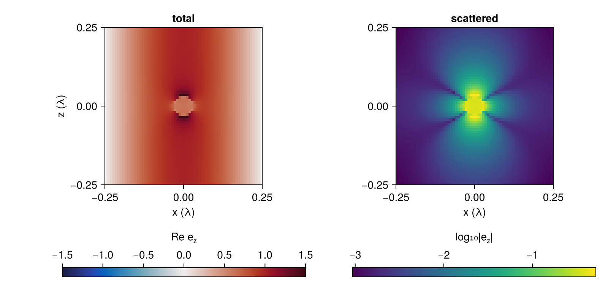
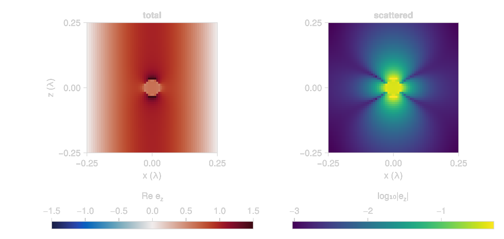
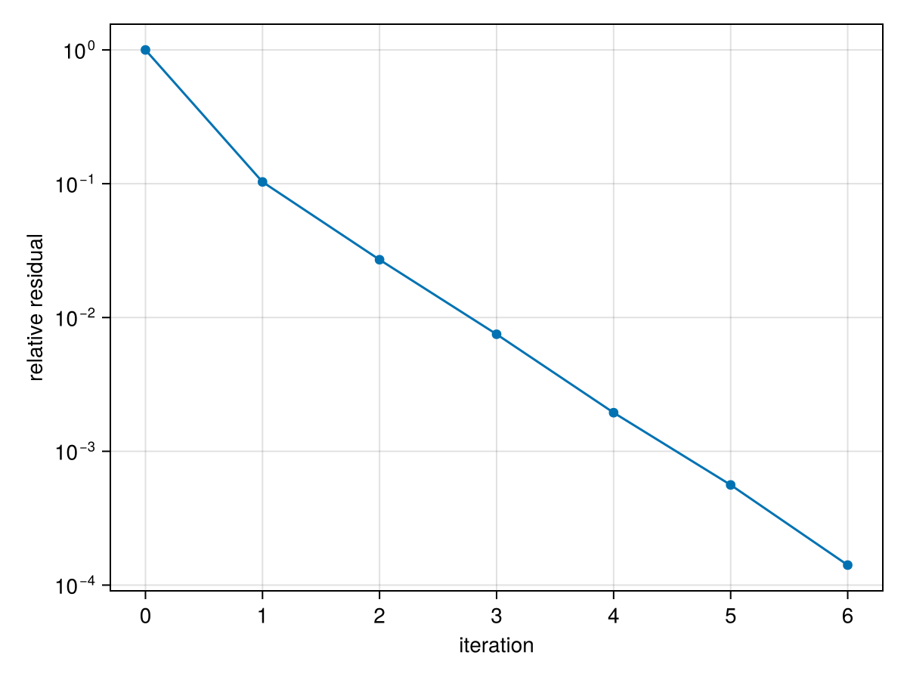
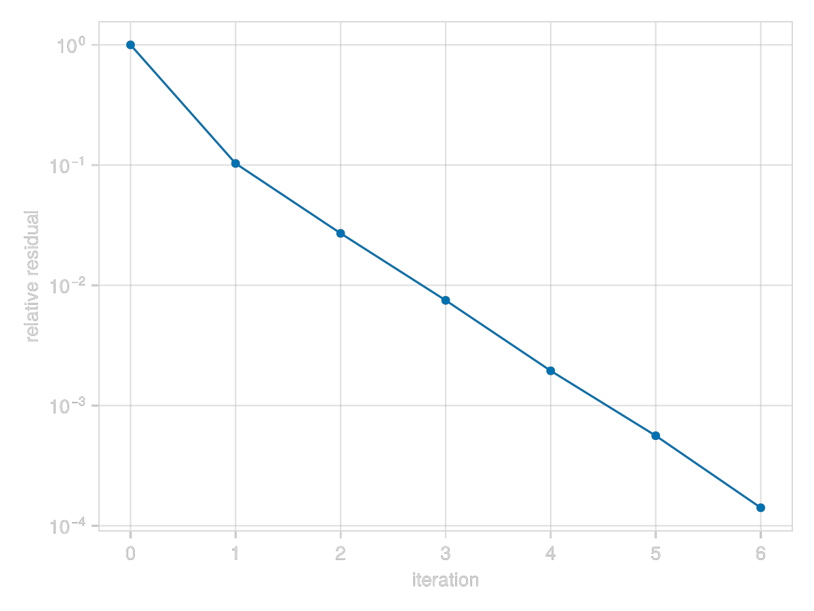

A First Scattering Calculation
So far we have only applied $\mathsf{G}_\circ$ to a current we chose ourselves (see the vacuum operator tutorial). Here we put material in the volume, shine a plane wave on it and solve for the currents the wave induces. We use a dielectric sphere much smaller than the wavelength, because its response has a textbook answer we can compare with.
using GilaElectromagnetics, CairoMakieA Small Dielectric Sphere
We mesh a box half a wavelength across at 128 cells per wavelength, and fill a sphere of radius $λ/32$ with $χ = 2$ (i.e., $ε = 3$). A susceptibility can be given as a function of position, the same way discretize! takes a current. It is sampled at the cell centers, so the sphere is made of whole cells, and that staircase is the main error in this tutorial. Lengths are in wavelengths, so the free-space wavenumber is $k_\circ = 2π$.
k₀ = 2π
χ = 2
radius = 1//32
Δ = 1//128
side = 1//2
n = Int(side / Δ) # cells per side
volume = GlaVol((n, n, n), (Δ, Δ, Δ))
inside(r) = sum(abs2, r) < radius^2
χ_sphere(r) = inside(r) ? χ : 0;To get an idea of what this looks like, we plot the cells that make up the sphere (the rest of the box is vacuum, so we leave it out). The arrows are the plane wave we will shine on it, which travels along $x$ (green) and is polarized along $z$ (blue).
x = Float64.(volume.grd[1]) # cell centers along each axis (the box is a cube)
χ_cells = [χ_sphere((x₁, x₂, x₃)) for x₁ in x, x₂ in x, x₃ in x]
near = 27:38
edges = (x[first(near)], x[last(near)]) .+ (-Δ / 2, Δ / 2)
fig = Figure()
ax = Axis3(fig[1, 1]; aspect = :data, xlabel = "x (λ)", ylabel = "y (λ)", zlabel = "z (λ)")
voxels!(ax, edges, edges, edges, χ_cells[near, near, near]; is_air = iszero, color = :steelblue)
arrows3d!(ax, [Point3f(-0.05, 0, -0.03)], [Vec3f(0.03, 0, 0), Vec3f(0, 0, 0.03)]; color = [:seagreen, :royalblue])
fig

The Scattering Operator
ScatteringOperator(G₀, χ_sphere) is $\mathsf{W} = (\mathsf{I} - \mathsf{X}\mathsf{G}_\circ)^{-1}$ (eq. 3.3), built from the vacuum operator G₀ and our susceptibility, and sus(W) gives back the susceptibility operator $\mathsf{X}$ inside it.
$\mathsf{W}$ acts on the driving current density $\vb*{\mathsf{p}}_\text{d} = \mathsf{X}\vb*{\mathsf{f}}_\text{inc}$ and returns the scattered current density $\vb*{\mathsf{p}}_\text{s}$, so we have to apply $\mathsf{X}$ to the incident field ourselves first. Applying $\mathsf{W}$ runs an iterative solver, GCRO-DR by default (convention 6.1). Our wave travels along $x$ and is polarized along $z$, with unit amplitude, and since Gila stores fields divided by $Z_\circ$ that amplitude is in the same units as $\mathsf{p}$. The scattered field is then $\vb*{\mathsf{f}}_\text{s} = \mathsf{G}_\circ\vb*{\mathsf{p}}_\text{s}$ and the total field is $\vb*{\mathsf{f}}_\text{t} = \vb*{\mathsf{f}}_\text{inc} + \vb*{\mathsf{f}}_\text{s}$.
G₀ = VacuumGreenOperator(volume)
W = ScatteringOperator(G₀, χ_sphere)
X = sus(W)
f_inc = discretize!(zeros(volume), r -> (0, 0, cis(k₀ * r[1])))
p_d = X * f_inc
p_s = W * p_d
f_s = G₀ * p_s
f_t = f_inc + f_s;Plotting the Fields
On the left is the real part of $e_z$ in the $xz$ plane through the center of the sphere, and on the right the scattered field alone (on a log scale). The sphere acts as a $z$-polarized dipole, and far away such a dipole radiates nothing along $z$, but the box is only half a wavelength across so most of what we see is near field, and the near field of a dipole is strongest along its axis.
slice(f) = regionview(f, 1)[:, n ÷ 2, :, 3] # middle y slice, z component
fig = Figure(size = (800, 380))
ax = Axis(fig[1, 1]; title = "total", xlabel = "x (λ)", ylabel = "z (λ)", aspect = DataAspect())
hm = heatmap!(ax, x, x, real(slice(f_t)); colormap = :balance, colorrange = (-1.5, 1.5))
Colorbar(fig[2, 1], hm; vertical = false, label = rich("Re e", subscript("z")))
ax = Axis(fig[1, 2]; title = "scattered", xlabel = "x (λ)", aspect = DataAspect())
hm = heatmap!(ax, x, x, log10.(abs.(slice(f_s))))
Colorbar(fig[2, 2], hm; vertical = false, label = rich("log₁₀|e", subscript("z"), "|"))
fig

Comparing with the Clausius–Mossotti Polarizability
If the sphere is much smaller than the wavelength, the incident field is essentially uniform over it, and a sphere in a uniform field polarizes uniformly. Inside, the sphere's own dipole field is $-\mathsf{p}/3$ (the quasi-static depolarization field, in Gila's units), so $\mathsf{p} = χ(\mathsf{f}_\text{inc} - \mathsf{p}/3)$, which gives $\mathsf{p} = 3χ/(χ+3)\, \mathsf{f}_\text{inc}$. The dipole moment is that times the volume $V$ of the sphere, which is the Clausius–Mossotti polarizability times the incident amplitude:
\[\mathsf{d} = α\mathsf{f}_\text{inc}, \qquad α = \frac{3Vχ}{χ + 3}.\]
Each cell with current density $\mathsf{p}$ carries a moment of $\mathsf{p}ΔV$ (as in the vacuum operator tutorial), so the moment of the sphere is the sum over its cells, and the incident amplitude at the center is 1.
ΔV = prod(volume.scl) # cell volume
d = sum(regionview(p_s, 1)[:, :, :, 3]) * ΔV
α(V) = 3V * χ / (χ + 3)
V = 4π / 3 * radius^3
d / α(V)1.0636181173043264 + 0.0022744626282126847imThe real part is a few percent off and the imaginary part is not zero. The imaginary part comes from radiation (the dipole loses energy by radiating, and the quasi-static picture leaves that out). The field the dipole drives back on itself adds $ik_\circ^3 d / 6π$ to the incident field, so $d = α(f_\text{inc} + ik_\circ^3 d/6π)$, and that predicts
V_cells = count(!iszero, χ_cells) * ΔV
1 / (1 - im * k₀^3 * α(V_cells) / 6π)0.9999955547747729 + 0.0021083655914100417imMost of the error in the real part comes from the staircasing. A sphere made of cubes does not quite have the volume of the sphere we asked for, and the dipole moment scales with the volume it actually holds. Here the cells overshoot by
V_cells / V - 10.044454314040563325and against the volume the mesh holds the ratio is
d / α(V_cells)1.0183481f0 + 0.0021776564f0imWhat is left over is the finite size of the sphere relative to $λ$, which the quasi-static polarizability ignores. The staircase error moves around erratically as $Δ$ changes, because the number of cells at the edge of the sphere does, which is not ideal. Averaging the susceptibility over each cell instead of sampling its center gets around this, and we do that in tutorial 4.
Solver Convergence
W * p_d solves the linear system with $\mathsf{I} - \mathsf{X}\mathsf{G}_\circ$. InverseScatteringOperator is that operator, and solve applies a solver to it directly, which repeats the solve of W * p_d but lets us pass a SlvLog to record it (its status, and the residual after every iteration).
A = InverseScatteringOperator(G₀, χ_sphere)
solve_log = SlvLog()
solve(A, p_d, GCRODRSolver(); log = solve_log)
(; solve_log.status, solve_log.numItr)(status = :converged, numItr = 6)The solver needs only a handful of iterations, even though this is not the weak scattering regime of the Born series ($χ = 2$ is not small). The sphere is so small that $\mathsf{G}_\circ$ acts on its nearly uniform current like the depolarization field above, $-\mathsf{p}/3$, so on the sphere $\mathsf{I} - \mathsf{X}\mathsf{G}_\circ$ is close to $1 + χ/3$ times the identity, and that is about as easy as a linear system gets.
fig = Figure()
ax = Axis(fig[1, 1]; xlabel = "iteration", ylabel = "relative residual", yscale = log10)
scatterlines!(ax, 0:solve_log.numItr, solve_log.resRec) # resRec: residual before the first step and after each one
fig

This page was generated using Literate.jl.